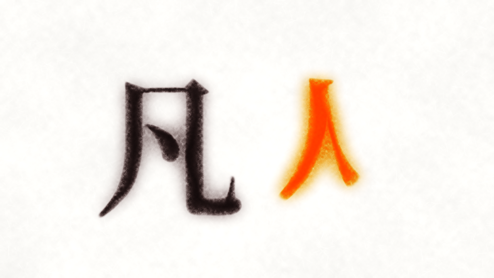

まわす ／ 打つ ／ スクロール
FIG_000 — THE BONJIN, / EST. 2026, MIYAZAKI–TOKYO
特別な人間はいない。いるのは、作り続けている普通の人間だけです。THE Bonjinは、ゲームとアプリを作る学生の開発集団です。ホームページ、名刺、アプリ、システム、ゲーム、Tシャツ。作れるものは、仕事として引き受けます。凡人が作る、未来への冒険（2026）。
尾薗圭亮のアプリ — App Store公開中の6本と、各アプリの具体的な内容 →
